리뷰 ▷ 권영욱(초심)
4. Tensor data
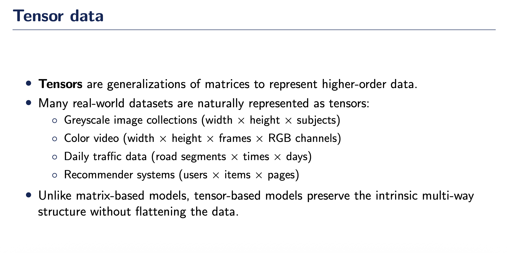
텐서(Tensor)란?
행렬(matrix)을 고차원으로 일반화한 자료구조로, 고차원 데이터를 표현하는 수학적 객체
실세계 데이터의 텐서 표현 예시
- 그레이스케일 이미지 컬렉션 (너비 × 높이 × 피험자 수)
- 컬러 동영상 (너비 × 높이 × 프레임 × RGB 채널)
- 일일 교통 데이터 (도로 구간 × 시간대 × 날짜)
- 추천 시스템 (사용자 × 아이템 × 페이지)
텐서 기반 모델의 장점
행렬 기반 모델과 달리 데이터를 평탄화(flattening)하지 않고, 데이터의 고유한 다차원 구조를 보존하며 데이터 간의 내재적 관계를 유지함
5. Low-rank tensor recovery
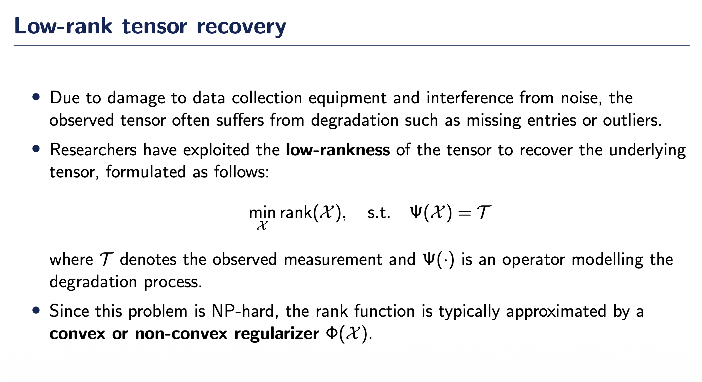
문제 배경
데이터 수집 장비 손상과 노이즈로 인해 관측된 텐서는 종종 결측값(missing entries) 또는 이상치(outliers) 같은 손상(degradation)을 겪음
해결 방법
연구자들은 텐서의 low-rankness를 활용하여 원본 텐서를 복원하며, 다음과 같이 정식화됨:
\[ \min_{\mathcal{X}} \text{rank}(\mathcal{X}), \quad \text{s.t.} \quad \Psi(\mathcal{X}) = \mathcal{T} \]
여기서 \(\mathcal{T}\)는 관측된 측정값, \(\Psi(\cdot)\)는 손상 과정을 모델링하는 연산자
계산 복잡도
이 문제는 NP-hard이므로, rank 함수는 일반적으로 convex 또는 non-convex regularizer \(\Phi(\mathcal{X})\)로 근사됨
6. Tensor rank의 정의
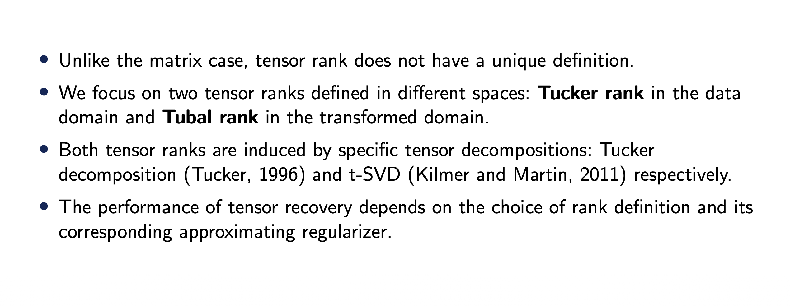
행렬과의 차이
행렬의 경우와 달리, 텐서 rank는 유일한 정의를 가지지 않음
두 가지 주요 텐서 rank
서로 다른 공간에서 정의된 두 가지 텐서 rank에 초점:
- Tucker rank: 데이터 영역(data domain)에서 정의
- Tubal rank: 변환된 영역(transformed domain)에서 정의
텐서 분해와의 관계
두 텐서 rank는 서로 다른 텐서 분해에 의해 유도됨:
- Tucker rank ← Tucker decomposition (Tucker, 1966)
- Tubal rank ← t-SVD (Kilmer and Martin, 2011)
성능에 미치는 영향
텐서 복원의 성능은 rank 정의의 선택과 그에 대응하는 근사 regularizer의 선택에 의존함
7. Overview of topics
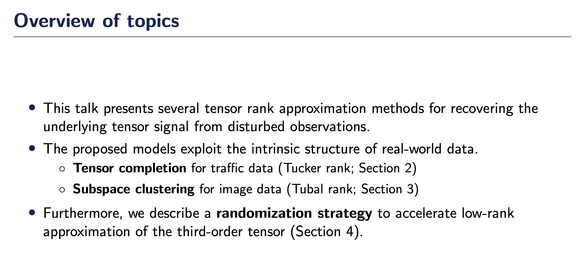
발표 내용
본 발표는 손상된 관측값으로부터 원본 텐서 신호를 복원하기 위한 여러 텐서 rank 근사 방법들을 다룸
제안된 모델의 특징
실세계 데이터의 고유한 구조를 활용
- Tensor completion for traffic data (Tucker rank; Section 2)
- Subspace clustering for image data (Tubal rank; Section 3)
추가 기여
3차 텐서의 low-rank 근사를 가속화하기 위한 randomization strategy 제시 (Section 4)
8. Notations
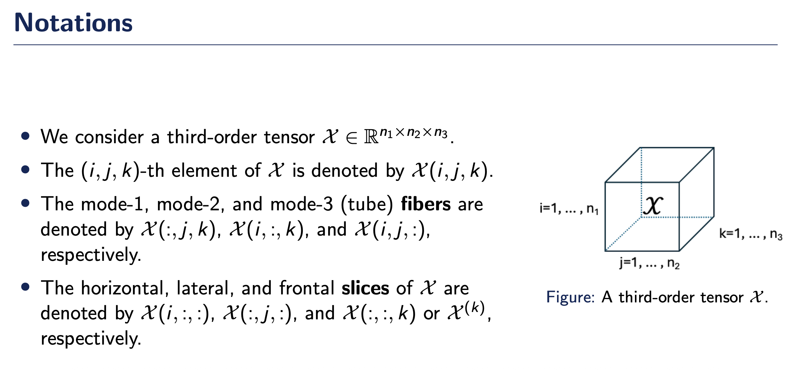
3차 텐서 표기법
3차 텐서 \(\mathcal{X} \in \mathbb{R}^{n_1 \times n_2 \times n_3}\)를 다룸
\((i, j, k)\)-번째 원소는 \(\mathcal{X}(i, j, k)\)로 표기
mode-1, mode-2, mode-3 (tube) fibers는 각각 다음과 같이 표기
- \(\mathcal{X}(:, j, k)\) (mode-1 fiber)
- \(\mathcal{X}(i, :, k)\) (mode-2 fiber)
- \(\mathcal{X}(i, j, :)\) (mode-3 fiber / tube)
Slices는 다음과 같이 표기
- Horizontal slice: \(\mathcal{X}(i, :, :)\)
- Lateral slice: \(\mathcal{X}(:, j, :)\)
- Frontal slice: \(\mathcal{X}(:, :, k)\) 또는 \(\mathcal{X}^{(k)}\)
9.
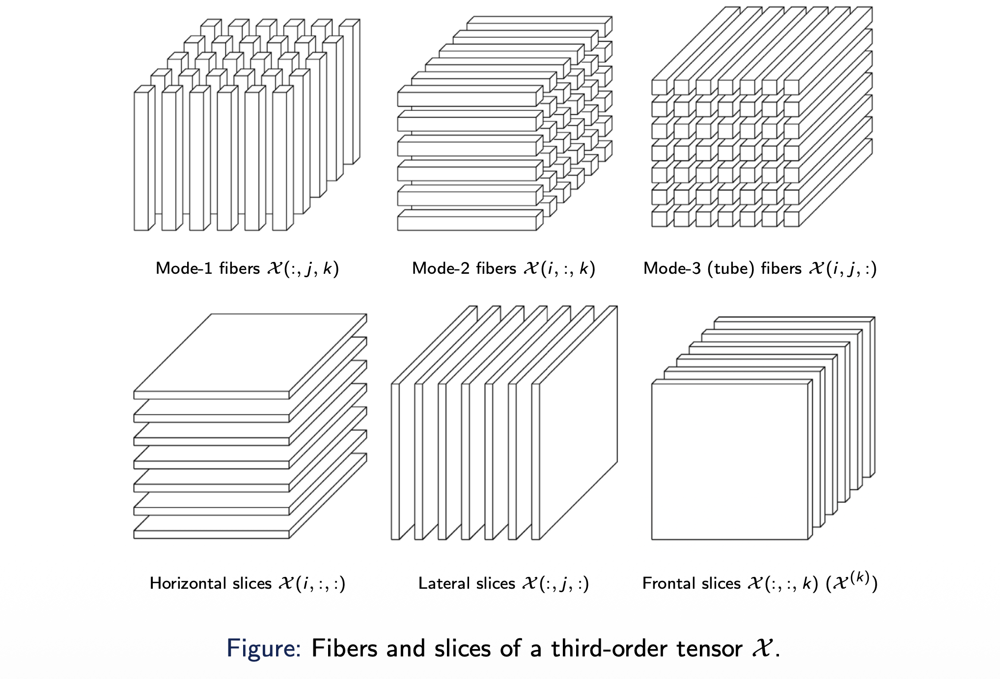
10. Tensor operations
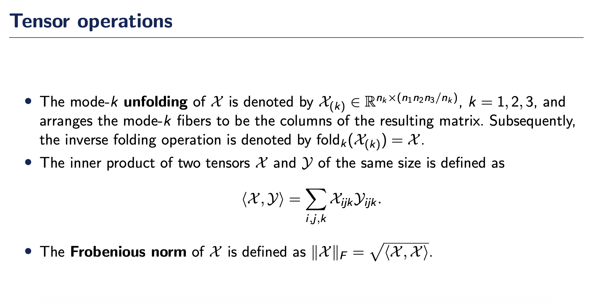
Mode-k unfolding (Matricization)
텐서 \(\mathcal{X}\)의 mode-\(k\) unfolding은 \(\mathcal{X}_{(k)} \in \mathbb{R}^{n_k \times (n_1n_2n_3/n_k)}\)로 표기되며, mode-\(k\) fiber들을 결과 행렬의 열로 배열함. 역연산은 \(\text{fold}_k(\mathcal{X}_{(k)}) = \mathcal{X}\)로 표기
Inner product (내적)
같은 크기의 두 텐서 \(\mathcal{X}\)와 \(\mathcal{Y}\)의 내적은 다음과 같이 정의
\[ \langle \mathcal{X}, \mathcal{Y} \rangle = \sum_{i,j,k} \mathcal{X}_{ijk} \mathcal{Y}_{ijk} \]
Frobenius norm
텐서 \(\mathcal{X}\)의 Frobenius norm은 다음과 같이 정의
\[ \|\mathcal{X}\|_F = \sqrt{\langle \mathcal{X}, \mathcal{X} \rangle} \]
11. Contents
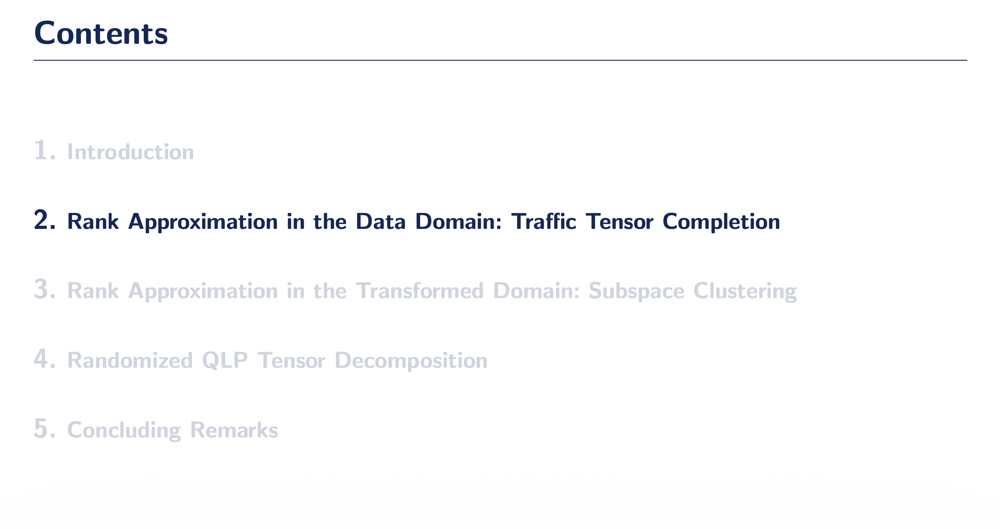
12. Overview
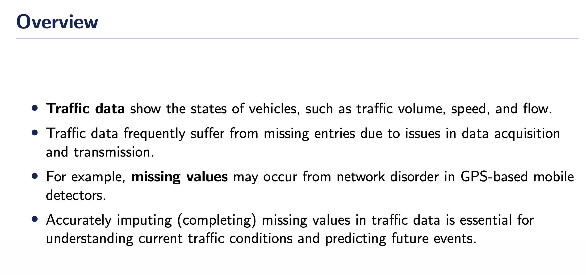
교통 데이터의 특성
교통 데이터는 차량의 상태를 나타내며, 교통량(traffic volume), 속도(speed), 흐름(flow) 등을 포함
결측값 문제
교통 데이터는 데이터 수집 및 전송 과정의 문제로 인해 자주 결측값(missing entries)이 발생함
예를 들어, GPS 기반 이동식 감지기의 네트워크 장애로 인해 결측값이 발생할 수 있음
결측값 보완의 중요성
교통 데이터의 결측값을 정확하게 보완(completing)하는 것은 현재 교통 상황을 이해하고 미래 사건을 예측하는 데 필수적
13. Traffic tensor data
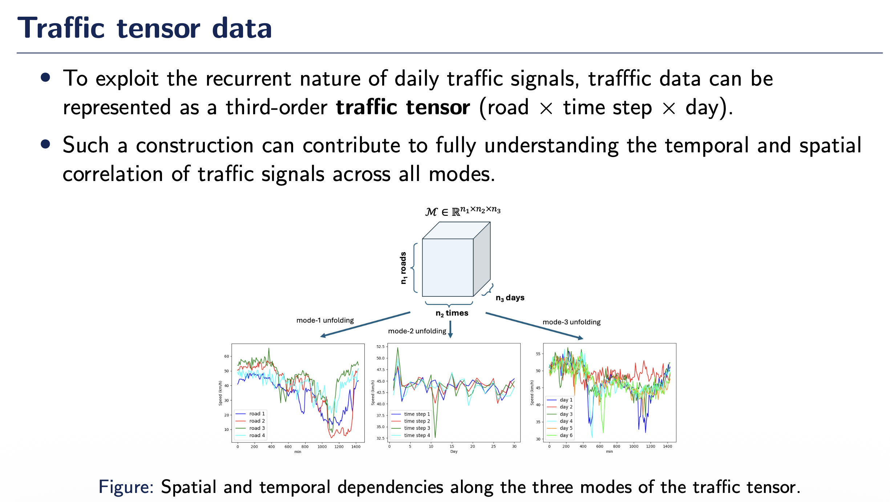
교통 텐서 데이터
일일 교통 신호의 반복적 특성을 활용하기 위해, 교통 데이터는 3차 교통 텐서(road × time step × day)로 표현 가능
이러한 구조는 모든 mode에 걸쳐 교통 신호의 시간적 및 공간적 상관관계를 완전히 이해하는 데 기여함
\(\mathcal{X} \in \mathbb{R}^{n_1 \times n_2 \times n_3}\) (도로 \(n_1\)개, 시간 단계 \(n_2\)개, 날짜 \(n_3\)개)
교통 텐서의 세 가지 mode에 따른 공간적 및 시간적 의존성
- Mode-1 unfolding: 도로 간 패턴 (서로 다른 도로의 시간에 따른 교통량)
- Mode-2 unfolding: 시간대 패턴 (특정 시간대의 도로별 교통량)
- Mode-3 unfolding: 날짜 패턴 (서로 다른 날의 도로-시간 패턴)
14.
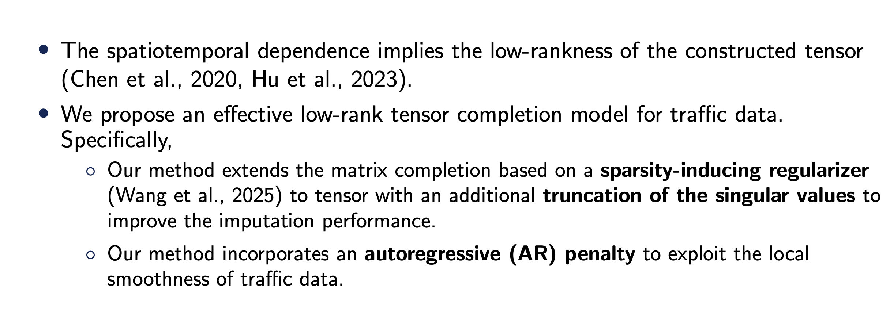
시공간적 의존성과 Low-rankness시공간적 의존성(spatiotemporal dependence)은 구성된 텐서의 low-rankness를 함의함 (Chen et al., 2020, Hu et al., 2023)
제안 모델
교통 데이터를 위한 효과적인 low-rank 텐서 completion 모델을 제안
방법론의 핵심
(1) Sparsity-inducing regularizer 기반 행렬 completion 확장
Wang et al. (2025)의 행렬 completion 방법을 텐서로 확장하며, 특이값의 절단(truncation of singular values)을 추가하여 imputation 성능을 향상
(2) Autoregressive (AR) penalty
교통 데이터의 국소적 평활성(local smoothness)을 활용하기 위해 autoregressive penalty를 통합
15. Tucker rank and its approximation
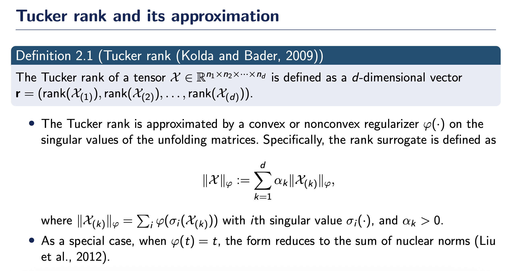
Tucker rank의 정의
텐서 \(\mathcal{X} \in \mathbb{R}^{n_1 \times n_2 \times \cdots \times n_d}\)의 Tucker rank는 \(d\)-차원 벡터로 정의됨:
\[ \mathbf{r} = (\text{rank}(\mathcal{X}_{(1)}), \text{rank}(\mathcal{X}_{(2)}), \ldots, \text{rank}(\mathcal{X}_{(d)})) \]
Tucker rank의 근사
Tucker rank는 unfolding 행렬들의 특이값에 대한 convex 또는 nonconvex regularizer \(\varphi(\cdot)\)로 근사됨
Rank surrogate의 정의
\[ \|\mathcal{X}\|_\varphi := \sum_{k=1}^d \alpha_k \|\mathcal{X}_{(k)}\|_\varphi \]
여기서: - \(\|\mathcal{X}_{(k)}\|_\varphi = \sum_i \varphi(\sigma_i(\mathcal{X}_{(k)}))\) (\(i\)-번째 특이값 \(\sigma_i(\cdot)\)) - \(\alpha_k > 0\): 가중치
특수한 경우
\(\varphi(t) = t\)일 때, 이 형태는 sum of nuclear norms로 축약됨 (Liu et al., 2012)
16. Low-rank tensor completion
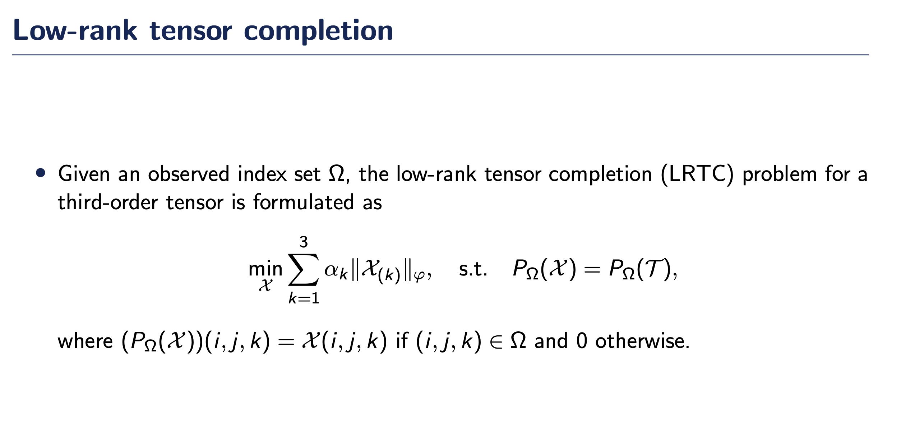
Low-rank Tensor Completion (LRTC) 문제
관측된 인덱스 집합 \(\Omega\)가 주어졌을 때, 3차 텐서에 대한 low-rank tensor completion (LRTC) 문제는 다음과 같이 정식화됨:
\[ \min_{\mathcal{X}} \sum_{k=1}^3 \alpha_k \|\mathcal{X}_{(k)}\|_\varphi, \quad \text{s.t.} \quad P_\Omega(\mathcal{X}) = P_\Omega(\mathcal{T}) \]
여기서 \(P_\Omega(\mathcal{X})\)는 projection 연산자로 정의됨:
\[ (P_\Omega(\mathcal{X}))(i,j,k) = \begin{cases} \mathcal{X}(i,j,k) & \text{if } (i,j,k) \in \Omega \\ 0 & \text{otherwise} \end{cases} \]
17. Proximal operator
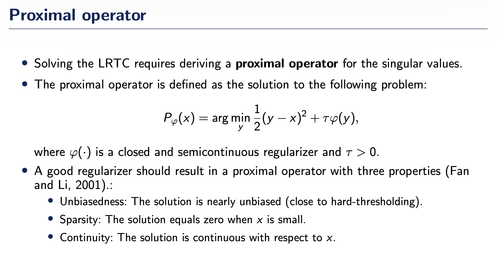
Proximal Operator의 필요성LRTC를 풀기 위해서는 특이값에 대한 proximal operator를 유도해야 함
Proximal Operator의 정의
Proximal operator는 다음 문제의 해로 정의됨:
\[ P_\varphi(x) = \arg\min_y \frac{1}{2}(y-x)^2 + \tau\varphi(y) \]
여기서 \(\varphi(\cdot)\)는 closed and semicontinuous regularizer이고 \(\tau > 0\)
좋은 Regularizer의 조건
좋은 regularizer는 다음 세 가지 성질을 만족하는 proximal operator를 생성해야 함 (Fan and Li, 2001):
- Unbiasedness: 해가 nearly unbiased (hard-thresholding에 가까움)
- Sparsity: \(x\)가 작을 때 해가 0
- Continuity: 해가 \(x\)에 대해 연속
18. Sparsity-inducing regularizer
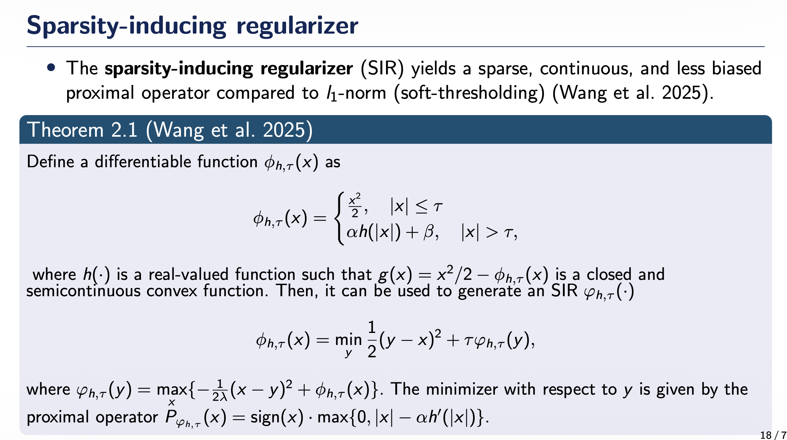
Sparsity-Inducing Regularizer (SIR)
Sparsity-inducing regularizer (SIR)는 \(l_1\)-norm (soft-thresholding)과 비교하여 sparse하고, 연속적이며, less biased한 proximal operator를 생성함 (Wang et al. 2025)
Theorem 2.1 (Wang et al. 2025)
미분 가능한 함수 \(\phi_{h,\tau}(x)\)를 다음과 같이 정의:
\[ \phi_{h,\tau}(x) = \begin{cases} \frac{x^2}{2}, & |x| \leq \tau \\ \alpha h(|x|) + \beta, & |x| > \tau \end{cases} \]
여기서 \(h(\cdot)\)는 실수값 함수이며, \(g(x) = x^2/2 - \phi_{h,\tau}(x)\)가 closed and semicontinuous convex function일 때, 이것을 사용하여 SIR \(\varphi_{h,\tau}(\cdot)\)를 생성할 수 있음:
\[ \phi_{h,\tau}(x) = \min_y \frac{1}{2}(y-x)^2 + \tau\varphi_{h,\tau}(y) \]
여기서 \(\varphi_{h,\tau}(y) = \max\{-\frac{1}{2\lambda}(x-y)^2 + \phi_{h,\tau}(x)\}\)
\(y\)에 대한 minimizer는 다음 proximal operator로 주어짐:
\[ P_{\varphi_{h,\tau}}(x) = \text{sign}(x) \cdot \max\{0, |x| - \alpha h'(|x|)\} \]
19.
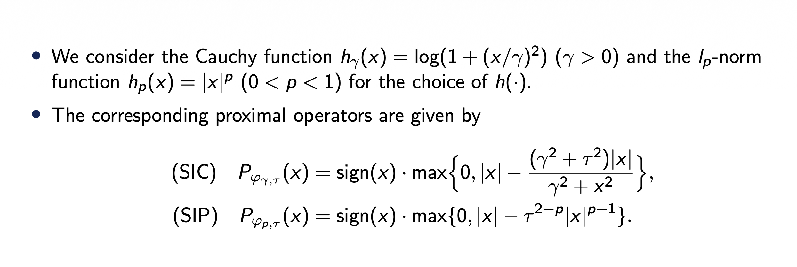
구체적인 \(h(\cdot)\) 함수의 선택
두 가지 \(h(\cdot)\) 함수를 고려:
- Cauchy function: \(h_\gamma(x) = \log(1 + (x/\gamma)^2)\) (\(\gamma > 0\))
- \(l_p\)-norm function: \(h_p(x) = |x|^p\) (\(0 < p < 1\))
대응하는 Proximal Operator
(SIC) Cauchy function에 대한 proximal operator:
\[ P_{\varphi_{\gamma,\tau}}(x) = \text{sign}(x) \cdot \max\left\{0, |x| - \frac{(\gamma^2 + \tau^2)|x|}{\gamma^2 + x^2}\right\} \]
(SIP) \(l_p\)-norm function에 대한 proximal operator:
\[ P_{\varphi_{p,\tau}}(x) = \text{sign}(x) \cdot \max\{0, |x| - \tau^{2-p}|x|^{p-1}\} \]
20.
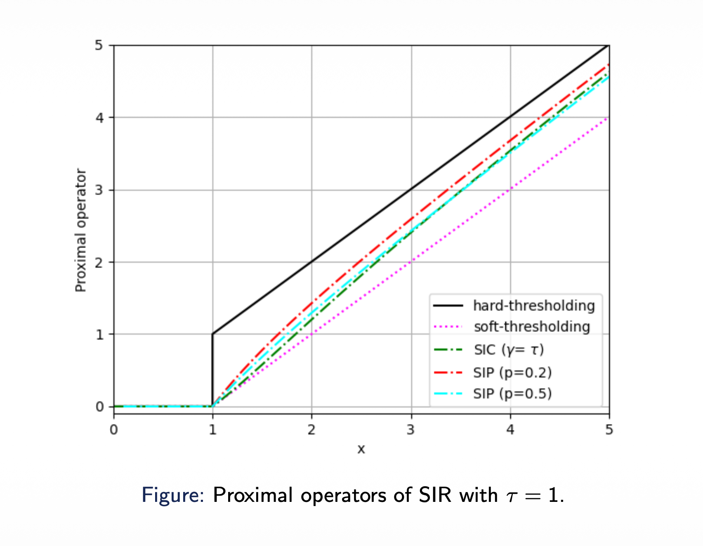
21. Truncated SIR
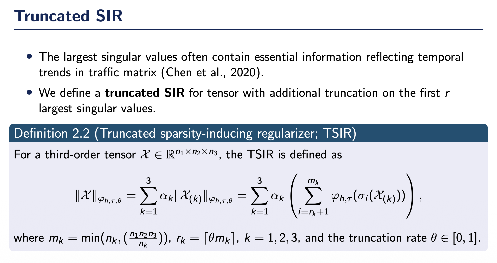
Truncated SIR의 동기가장 큰 특이값들은 교통 행렬의 시간적 추세를 반영하는 본질적 정보를 포함함 (Chen et al., 2020)
Truncated SIR 정의
텐서에 대해 첫 \(r\)개의 가장 큰 특이값에 추가 truncation을 적용한 truncated SIR을 정의
Definition 2.2 (Truncated sparsity-inducing regularizer; TSIR)
3차 텐서 \(\mathcal{X} \in \mathbb{R}^{n_1 \times n_2 \times n_3}\)에 대해 TSIR은 다음과 같이 정의됨:
\[ \|\mathcal{X}\|_{\varphi_{h,\tau,\theta}} = \sum_{k=1}^3 \alpha_k \|\mathcal{X}_{(k)}\|_{\varphi_{h,\tau,\theta}} = \sum_{k=1}^3 \alpha_k \left( \sum_{i=r_k+1}^{m_k} \varphi_{h,\tau}(\sigma_i(\mathcal{X}_{(k)})) \right) \]
여기서: - \(m_k = \min(n_k, (n_1n_2n_3/n_k))\) - \(r_k = \lceil \theta m_k \rceil\), \(k = 1, 2, 3\) - Truncation rate \(\theta \in [0, 1]\)
22. Proximal operator for TSIR
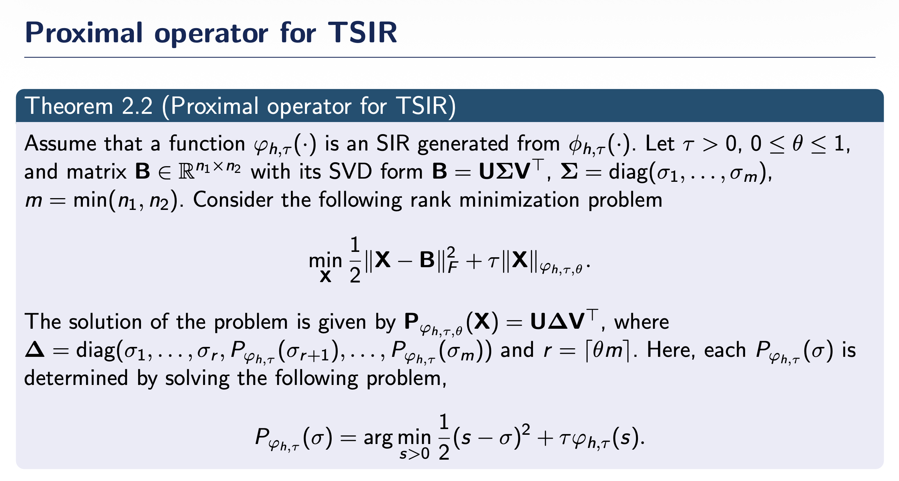
Proximal Operator for TSIRTheorem 2.2 (Proximal operator for TSIR)
함수 \(\varphi_{h,\tau}(\cdot)\)가 \(\phi_{h,\tau}(\cdot)\)로부터 생성된 SIR이라고 가정. \(\tau > 0\), \(0 \leq \theta \leq 1\)이고, 행렬 \(\mathbf{B} \in \mathbb{R}^{n_1 \times n_2}\)의 SVD 형태가 \(\mathbf{B} = \mathbf{U}\mathbf{\Sigma}\mathbf{V}^T\), \(\mathbf{\Sigma} = \text{diag}(\sigma_1, \ldots, \sigma_m)\), \(m = \min(n_1, n_2)\)일 때, 다음 rank minimization 문제를 고려:
\[ \min_{\mathbf{X}} \frac{1}{2}\|\mathbf{X} - \mathbf{B}\|_F^2 + \tau\|\mathbf{X}\|_{\varphi_{h,\tau,\theta}} \]
문제의 해:
\[ P_{\varphi_{h,\tau,\theta}}(\mathbf{X}) = \mathbf{U}\mathbf{\Delta}\mathbf{V}^T \]
여기서:
\[ \mathbf{\Delta} = \text{diag}(\sigma_1, \ldots, \sigma_r, P_{\varphi_{h,\tau}}(\sigma_{r+1}), \ldots, P_{\varphi_{h,\tau}}(\sigma_m)) \]
그리고 \(r = \lceil \theta m \rceil\)
각 \(P_{\varphi_{h,\tau}}(\sigma)\)는 다음 문제를 풀어서 결정:
\[ P_{\varphi_{h,\tau}}(\sigma) = \arg\min_{s>0} \frac{1}{2}(s-\sigma)^2 + \tau\varphi_{h,\tau}(s) \]